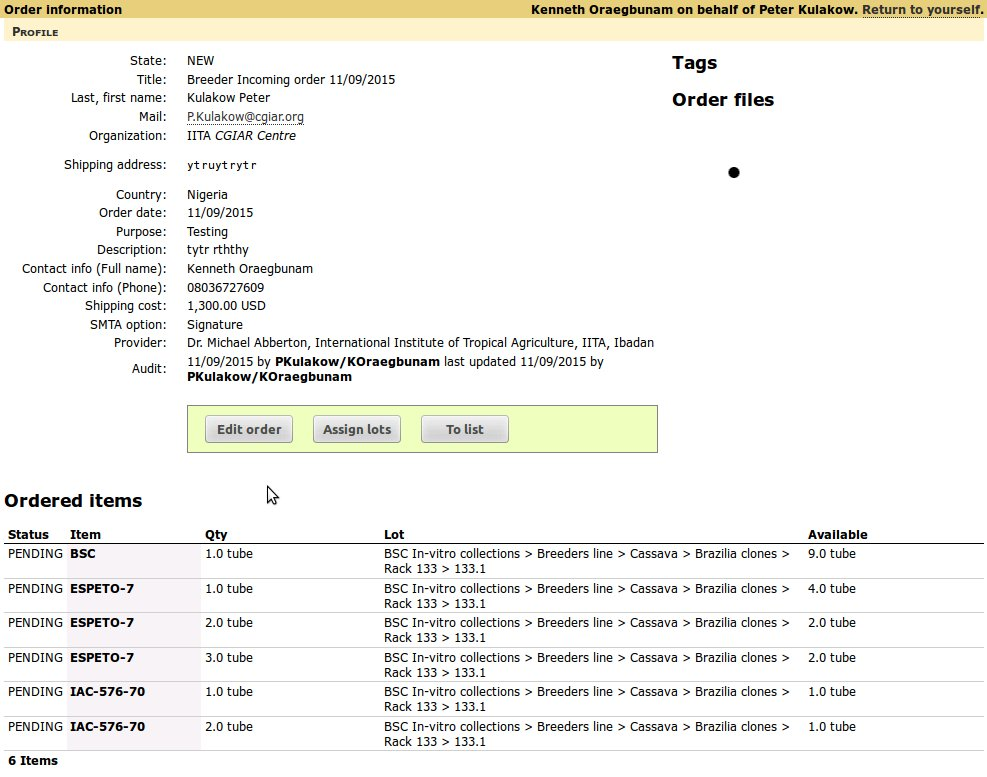
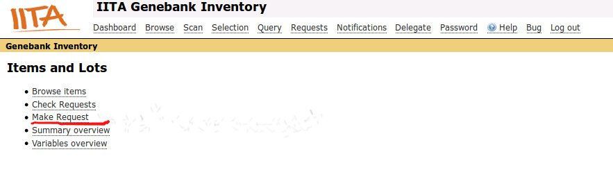
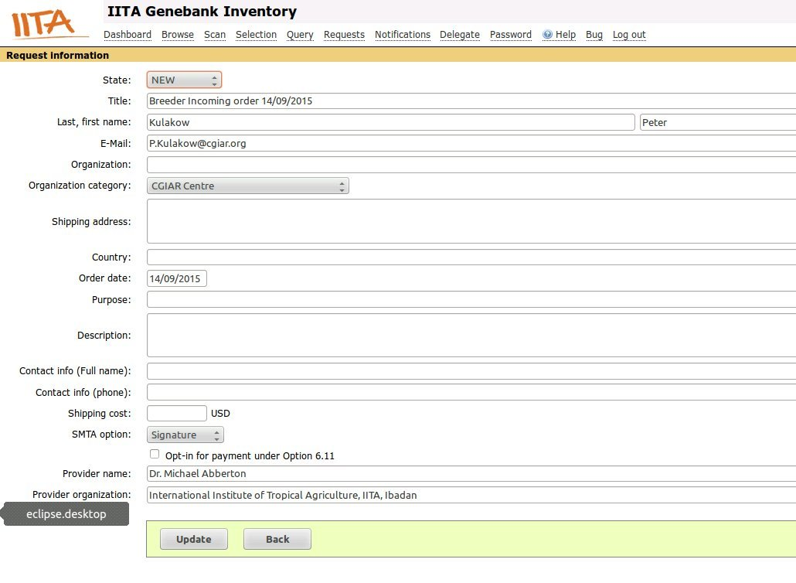
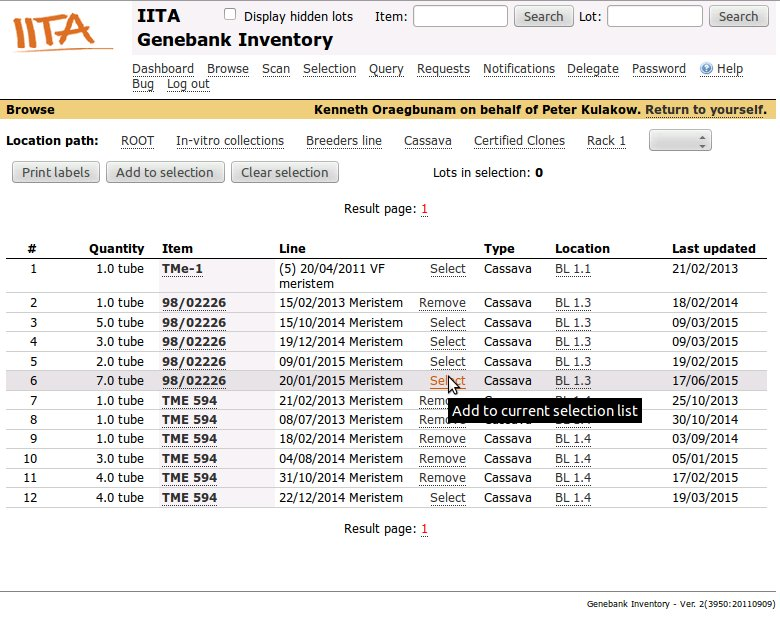
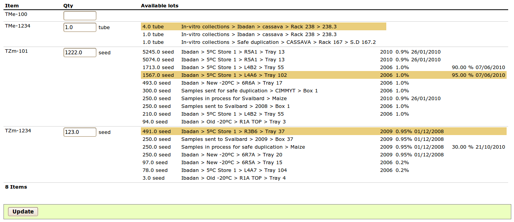

Inventory system allows breeders to place accession requests to be properly handled by GRC Office.
Example request
Click on Make Request link on the dashboard page or go to Requests link at the top of the page and click Add New link.
Example request
With any request for germplasm you have to capture information on Requester and requested items:
Example request
Items can be requested after entering ordering details by going through Browse link and selecting items (accession) that are in the list of locations selected.
Selecting items
Click [Select] link on each item row that you are interested in.
Click [Requests] link at the top Navigation menu. Click newly raised Request link from the list of existing requests.
A requested item (accession) will usually have more than one available lot. Before germplasm can be distributed to Requester, source lots for distribution must be selected. To assign lots to requested items, click Assign lots button.
For every item requested, list of all lots with quantity > zero are displayed. Select the lot that you wish to be used in distribution and type in the quantity to be distributed. In case that requested item does not exist in Inventory system or quantity is available, you will not be able to assign a lot. The requested item will remain pending until later time, when a lot is available.
Assigning lots to requested items